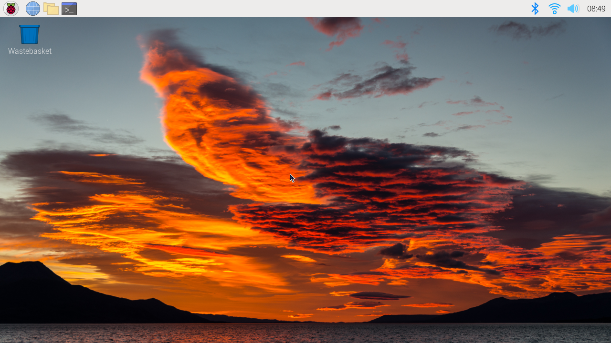
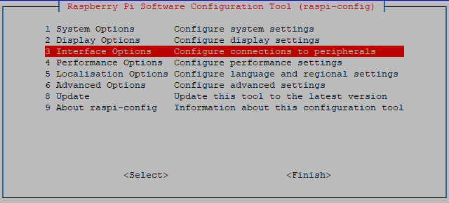

注釈
こんにちは、SunFounderのRaspberry Pi & Arduino & ESP32愛好家コミュニティへようこそ！Facebook上でRaspberry Pi、Arduino、ESP32についてもっと深く掘り下げ、他の愛好家と交流しましょう。
参加する理由は？
エキスパートサポート：コミュニティやチームの助けを借りて、販売後の問題や技術的な課題を解決します。
学び＆共有：ヒントやチュートリアルを交換してスキルを向上させましょう。
独占的なプレビュー：新製品の発表や先行プレビューに早期アクセスしましょう。
特別割引：最新製品の独占割引をお楽しみください。
祭りのプロモーションとギフト：ギフトや祝日のプロモーションに参加しましょう。
👉 私たちと一緒に探索し、創造する準備はできていますか？[ここ]をクリックして今すぐ参加しましょう！
Mac OS X ユーザー
Macユーザーにとって、Raspberry Piのデスクトップへの直接アクセスは、コマンドラインよりもVNC経由での方が便利です。Raspberry Pi側でVNCを有効にした後、Finderを通じて設定されたアカウントのパスワードを入力するだけでアクセスできます。
この方法は、MacとRaspberry Pi間の通信を暗号化しない点に注意してください。 通信はご自宅やオフィスのネットワーク内で行われるため、保護されていなくても問題ありません。 ただし、気になる場合は、 VNC® Viewer のようなVNCアプリケーションをインストールできます。
もしくは、仮のモニター（TV）、マウス、キーボードを使って、Raspberry Piのデスクトップを直接開いてVNCをセットアップすると便利です。 そうでなくても問題ありません、SSHコマンドでRaspberry PiのBashシェルを開き、そこからVNCをセットアップするコマンドを実行できます。
仮のモニター（またはTV）がある場合？
Raspberry Piにモニター（またはTV）、マウス、キーボードを接続し、電源を入れます。画面の指示に従ってメニューを選びます。
次の画面が表示されます。 Interfaces タブで、 VNC を Enabled に設定し、 OK をクリックします。
画面の右上にVNCアイコンが表示され、VNCサーバーが起動します。
VNC アイコンをクリックしてVNCサーバーのウィンドウを開き、右上の Menu ボタンをクリックして Options を選びます。
次の画面が表示され、オプションを変更できます。
Encryption を Prefer off 、 Authentication を VNC password。
OK ボタンをクリックすると、パスワード入力画面が表示されます。Raspberry Piのパスワードと同じもの、または異なるものを入力し、 OK をクリックします。
これでMacから接続する準備が整いました。モニターの接続は解除しても構いません。
ここからは、Mac側での操作になります。
Finderのメニューから、 Connect to Server を選びます（右クリックで開けます）。
vnc://<ユーザー名>@<ホスト名>.local（またはvnc://<ユーザー名>@<IPアドレス>）を入力し、 Connect をクリックします。パスワードを要求されるので、入力してください。
Raspberry Piのデスクトップが表示され、そのままMacから操作できるようになります。
仮のモニター（またはTV）がない場合？
SSHコマンドでRaspberry PiのBashシェルを開くことができます。
BashはLinuxの標準的なデフォルトシェルです。
シェル自体は、ユーザーがUnix/Linuxを使用する際のコマンド（指示）です。
必要な操作のほとんどはシェルを通じて行うことができます。
Raspberry Pi側のセットアップが完了したら、Macの Finder からRaspberry Piのデスクトップにアクセスできます。
ssh <username>@<hostname>.localを入力してRaspberry Piに接続します。ssh pi@raspberrypi.local
初回ログイン時にのみ以下のメッセージが表示されます。 yes と入力してください。
ホスト 'raspberrypi.local (2400:2410:2101:5800:635b:f0b6:2662:8cba)' の真正性が確認できません。 ED25519 キーのフィンガープリントはSHA256:oo7x3ZSgAo032wD1tE8eW0fFM/kmewIvRwkBys6XRwgです。 このキーは他に知られていない 接続を続けますか (yes/no/[fingerprint])？
Raspberry Piのパスワードを入力します。入力したパスワードは表示されませんので、誤入力に注意してください。
pi@raspberrypi.local のパスワード: Linux raspberrypi 5.15.61-v8+ #1579 SMP PREEMPT Fri Aug 26 11:16:44 BST 2022 aarch64 Debian GNU/Linux システムに同梱されているプログラムはフリーソフトウェアです； 各プログラムの正確な配布条件は、/usr/share/doc/*/copyright 内の個々のファイルで説明されています。 Debian GNU/Linuxは、適用される法律が許す範囲で、一切の保証はありません。 最終ログイン: 2022年9月22日 12:18:22 pi@raspberrypi:~ $
成功してログインできたら、MacからVNCでログインできるようRaspberry Piを設定します。まず、以下のコマンドを実行してOSを更新します。
sudo apt update sudo apt upgrade
続行しますか？ [Y/n]」と聞かれたら、Yと入力してください。アップデートには時間がかかる場合があります（その時のアップデート量による）。
以下のコマンドを入力して、 VNCサーバー を有効にする。
sudo raspi-config次の画面が表示されます。キーボードの矢印キーで 3 Interface Options を選択し、 Enter キーを押します。
次に VNC を選択します。

キーボードの矢印キーで <Yes> -> <OK> -> <Finish> を選択して設定を完了します。

VNCサーバーが起動したら、Macから接続するための設定を変更しましょう。
全ユーザーアカウントの全プログラムに対するパラメーターを指定するには、
/etc/vnc/config.d/common.customを作成します。sudo nano /etc/vnc/config.d/common.custom
Authentication=VncAuthenterと入力した後、Ctrl+X->Y->Enterで保存して終了。加えて、MacからVNCでログインするためのパスワードを設定します。Raspberry Piのパスワードと同じものを使用するか、異なるものを使用することができます。
sudo vncpasswd -service
設定が完了したら、変更を適用するためにRaspberry Piを再起動します。
sudo sudo reboot
ここで、右クリックで開くことができる Connect to Server のメニューから Finder を選択します。
vnc://<ユーザー名>@<ホスト名>.local（またはvnc://<ユーザー名>@<IPアドレス>）と入力します。入力後、 Connect をクリックします。パスワードが要求されるので、入力してください。
Raspberry Piのデスクトップが表示され、そのままMacから操作できます。